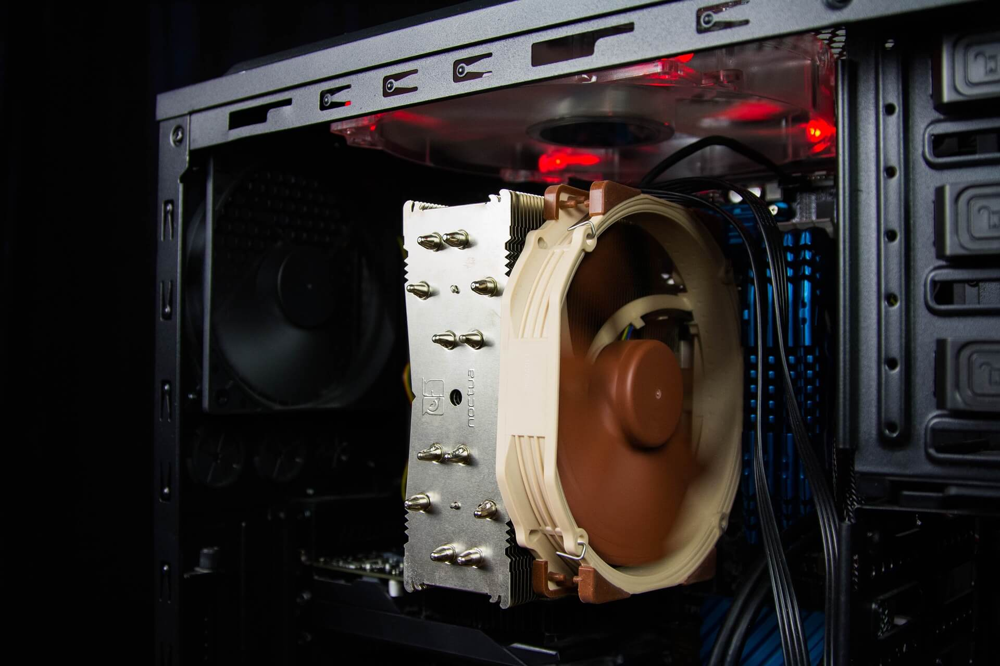
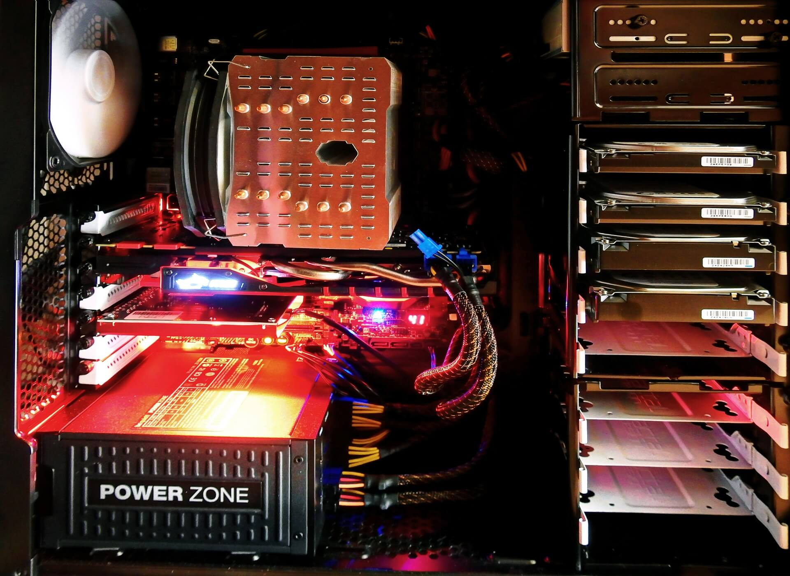

Desktop Computers
Home
Component Information
Computer Maintenance
Desktops in the Past
 
Definition: A computer that is not portable, consisting of components connected to a monitor, keyboard and mouse.